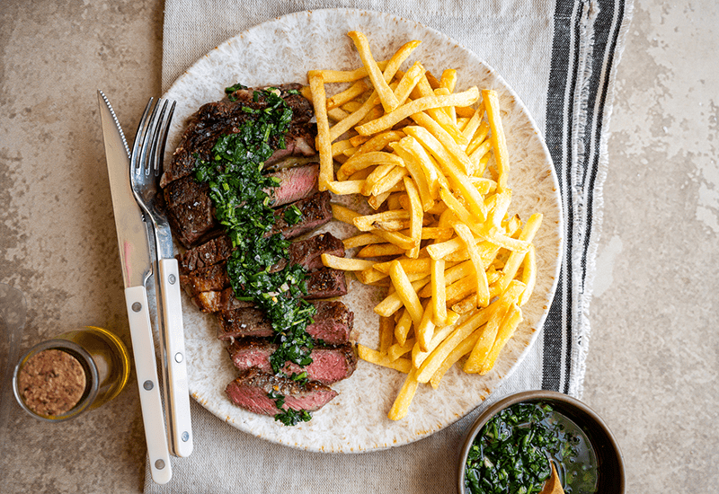

How to make Steak Frites
Back to HomePage

Steak frites is a classic bistro dish of steak and French
fries, with origins disputed between France and Belgium,
and is considered the national dish of Belgium by some.
The dish consists of a juicy, properly cooked steak, often
pan-seared or grilled, paired with perfectly crisp,
buttery French fries.
Ingredients
- Nice piece of steak (I prefer NY strip)
- Potatoes
- Butter
- Thyme
- Olive oil
Steps:
- Start by making your herb butter by whipping together
some softened unsalted butter in a stand mixer with the
paddle attachment until it is light and fluffy, which
takes about 5-7 minutes. Next, add the rosemary, thyme,
green onions, garlic, lemon zest, lemon juice, salt,
and pepper until combined and set aside.
- Cut the russet potatoes to your desired size and add
them to a container with cold water. Once they are done
cutting, drain them into a colander and rinse them
thoroughly. Add them to a deep fryer or pot of oil at
300° and cook for 3 minutes. When
ready to serve, turn the heat to 350° and cook for 3
more minutes. Season with salt and serve.
- Heat a large frying pan over high heat with oil until it
smokes. Season the steak on all sides with sea salt
and pepper, add it to the pan, and turn the heat to
medium. Add thyme, garlic, and butter, and cook for 3
minutes per side while basting the steak. Rest for 3-4
minutes before serving (the perfect time to recook the
fries at 350° for 3 minutes).
- Serve on a plate and enjoy!